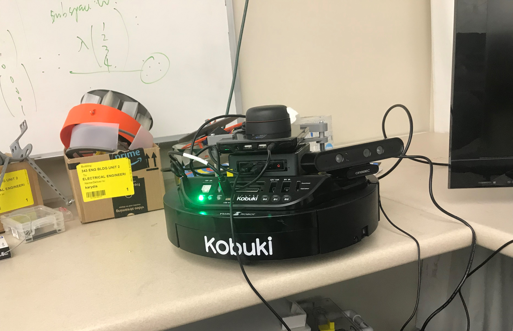
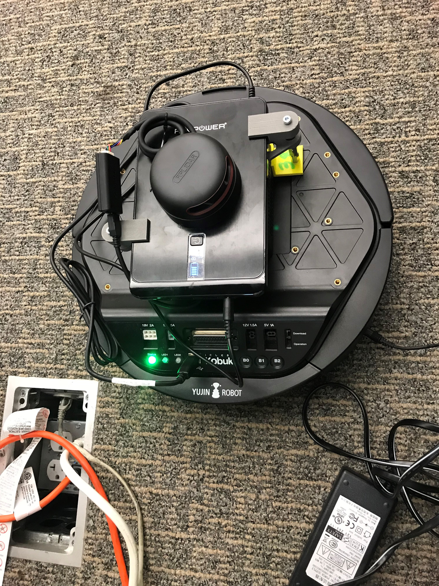
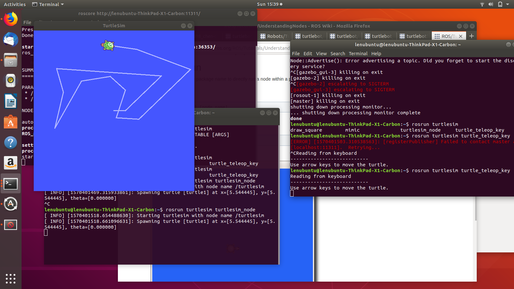
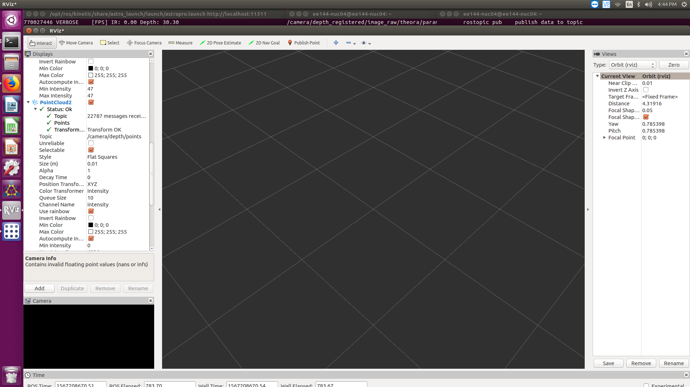
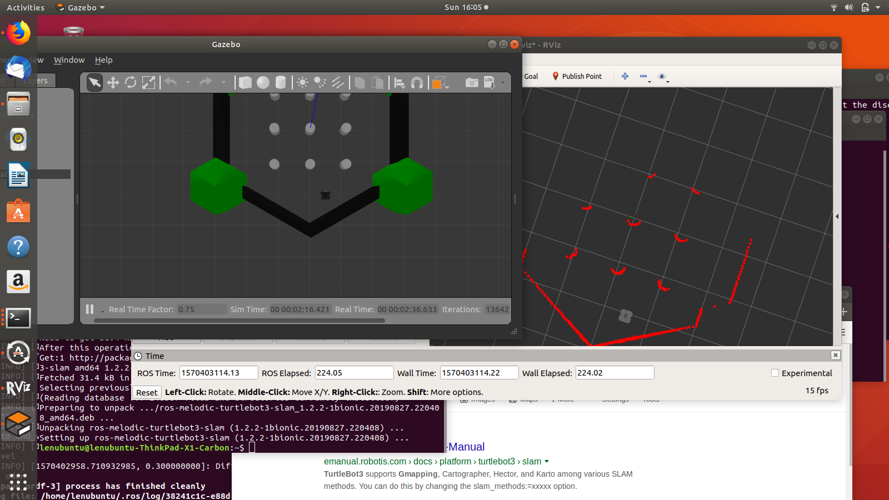
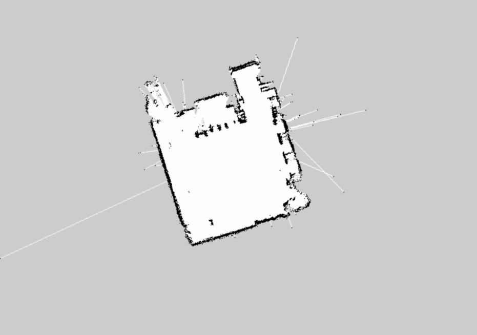

I tinker with a Turtlebot and get it to meander aimlessly and harass helpless victims in the lab.
 Kobuki Sam, in all his glory.Today's task is to get Turtlebot Sam to move autonomously and navigate on its own. If we can get it to drag itself across the room and bother my neighbor on its own I'll be happy. But before we do that, we must first get to know how to get all these snazzy looking components to communicate with each other.
For this project, I'll be using a Intel NUC, an RPLidar A2, a Kobuki Turtlebot, and an Orbbec Astra 3D camera.
 Whose a good widdle boy?Is it ROS time? I think it's ROS time. Robot Operating System (ROS) is used by every module on the robot to communicate to each other. Message passing and event handling is all done via ROS. It is important to note that ROS is not an Operating System as the name seems to confusingly suggest. The ROS wiki is a good jumping off point for newcomers. Another resource I found very helpful were a handful of ETH Zurich lectures provided to me by my professor. It also should be noted here that ROS distributions are tied to versions of Ubuntu. I'll be using ROS Kinetic with Ubuntu 16.04.
 ROS wiki's first tutorial: TurtleSimI found many of ROS wiki's tutorials to be very helpful, and spent a good amount of time just going through each of them. Since they are well documented on the wiki, I will not go over them here.
After dipping my toes in ROS, it was time to start navigation. Firing up gazebo for the first time and simulating a bot took quite some time, but well worth it. After doing alot more reading on the ROS navigation stack, setting up a virtual Lidar, and initializing a tf, I was finally able to get ros gazebo to output my lonely virtual turtlebot with a few preset obstacles.
 My favorite tool, the Robot Vizualizer (Rviz). Seems to have an error displaying laserscan data though.I apologize for the lack of concrete steps, I don't remember the exact commands used to get to this point, and will likely go through and revise this post so that readers can more accurately follow along with me.
The left window below shows Sam's enviroment, while the right window is what he sees. The red dots are an interpretation of the data provided by the bot's Lidar module. The bot receives two main sources of data from which it is able to determine its own position relative to its enviroment: Its own telemetry and the laserscan data from the Lidar.
 We have visual!At this point, it was time to put the SLAM gmapping package to work. SLAM (Simultaneous Localization And Mapping), is the mathematical problem of being able to build a map of an unknown enviroment, while also keeping track of the subject's location within it. We begin mapping by running the ROS gmapping package, and simply teleoperating our bot around the lab. After mapping, Sam should theoretically be able to move from any one point on the map to any other point using his own knowledge of his enviroment and the RPLidar on his head. I set him on a victory lap around the room and went to get a cup of coffee.
 My lab room. You can see the other lab bots lined up near the top center portion of the room.After a brief stint of terrorizing labgoers, Kobuki Sam was ready to retire. His battery ran low and it was getting dark (Never forget Opportunity!). I plugged him in, and he waited faithfully for the next day to start.